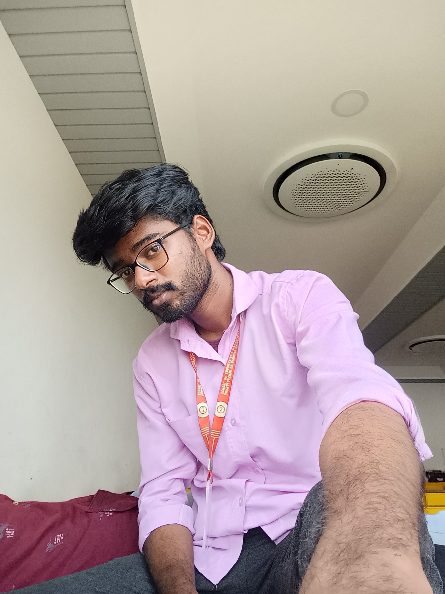

I’m Vamsi.k, an enthusiastic learner with a strong interest in Artificial Intelligence, Machine Learning, and software development. I enjoy building practical solutions that solve real-world problems—whether it’s AI-based systems, secure web applications, or tech tools that improve everyday life. I’m always curious, always exploring, and constantly improving my skills in Python, web development, and modern technologies. I love turning ideas into meaningful projects and presenting complex concepts in a simple, clear way. I believe in learning by doing, and I’m always open to new challenges, collaborations, and opportunities to grow.
I’m passionate about using technology to make a meaningful impact. My approach is simple: understand the problem deeply, design smart solutions, and build them with clarity and precision. I enjoy working on AI-driven projects like phishing detection, fall-detection systems, and secure authentication models because they combine innovation with real usefulness. Along with technical skills, I value communication, teamwork, and consistency — traits that help me grow both personally and professionally. As I continue my journey, I aim to develop more intelligent systems, contribute to impactful projects, and keep pushing myself to learn something new every day.